Goals
·
To determine means to
identify participants with substantial motion artifacts
·
To understand the types
and causes of motion artifacts
·
To understand the benefits
and limitations of motion correction algorithms
·
To understand the logic
of including motion correction output as predictors of no interest.
Background
Refer back to lecture material from
Psych9223_F2017_L05_Preprocessing.pptx and Psych9223_F2017_L09_GLM.pptx
Recall the problems of head motion and how motion
correction algorithms attempt to realign each volume (set of slices at one
point in time) with a reference volume (often the first volume within a run)
using 3 translation and 3 rotation parameters.
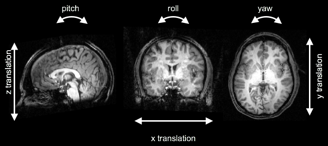
Also recall that for each voxel (or region in a ROI
approach), the General Linear Model takes variance in the data over time and
accounts for it with a series of predictors, each multiplied by a beta weight,
plus the residuals. Put another way, it
separates the data variance into variance that can be explained and variance
that cannot be explained. Statistical
significance depends upon the ratio of explained/unexplained variance. Variance
can be explained not only by predictors of interest but also by predictors of
no interest.
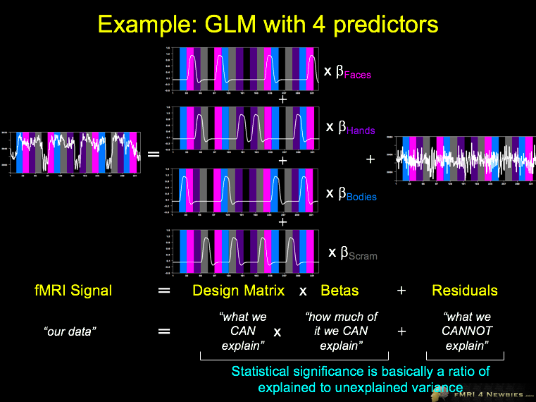
General Instructions and Assignment Questions: Overview
You have data from one Localizer run in each of four
participants. One or more of the participants have substantial head motion
artifacts; one or more do not.
Keep the following steps and questions in mind as you
proceed to the specifics of the tutorial.
Step 1: Evaluate each of the three
participants’ data for signatures of head motion.
Q1: For each
of the four participants,
a) What evidence is there for gradual or abrupt head
motion (and if abrupt, at which time points is the problem most evident)? If you think there is substantial motion,
list all the signatures of the problem that led you to this conclusion.
b) For participants who show evidence of head motion,
what could they have been doing to cause these artifacts?
Q2:
a) Among the four participants, which shows the most
problematic data? Justify your choice.
b) Explain three
reasons that motion can be detrimental to fMRI data.
c) What evidence suggests problems related to the worst
case of motion were fixed or not fixed by motion correction?
d) Which consequences of motion are fixed by motion
correction algorithms and which are not?
Step 2: Pick the participant that you
think had the worst head motion artifacts. For this participant (and only this
participant), choose at least one contrast that makes theoretical sense to find
a theoretically meaningful area (visual cortex, hand area, face area). For that contrast, compare and contrast a GLM
that includes only the predictors of interest (POIs) vs. a GLM that includes
both the predictors of interest (POIs) and predictors of no interest (PONIs)
i.e., motion plots.
Q3: For only
the participant with the worst artifacts,
a) How did the model with only POIs compare to the model
with both POIs and PONIs?
b) Considering how the GLM works, what effect should the
addition of PONIs have on statistical significance and why?
Files
For each of 4 participants
(P04, P06, P07, and P13) there is a folder with
the following files.
.fmr and .stc files (and .amr files, but ignore these)
·
these paired files
include raw 2D (sliced) functional data
o .fmr (functional MR sequence) is a text header file
while .stc contains the corresponding slice time course data
·
all files are for the
first localizer run for that P (Loc1; S1R1 means Session1Run1)
·
files without 3DMCTS
have not had any preprocessing performed
·
files ending in 3DMCTS have been motion
corrected
o abbreviation stands for 3D motion correction with trilinear-sinc interpolation
.prt files
·
these protocol
files contain the information about the order and timing of conditions and are
linked in the .fmr
.sdm files
·
.sdm
files contain columns of numbers
·
these can reflect
a) _POI.sdm = predictors of interest (POIs) in the design matrix (hence the
acronym, single design matrix)
b) _3DMC.sdm = the output of motion
correction algorithm, 3 translation and 3 rotation plots
c) _POI+PONI.sdm = both the predictors of interest in (a) and the motion parameters in
(b) as predictors of no interest to account for known variance
.glm files
·
these store the output
of running the GLM (that is, one beta weight per condition per voxel) and
enable you to generate maps of particular contrasts
·
There are two versions
for both the
_param.bmp
files
·
These are files Kevin
made to show motion plots across the whole session (including the other
Localizer run and the 6 Experimental runs, not provided here).
Specific Instructions: Step 1: Inspecting
Data for Possible Motion Artifacts
You will run each of these steps for the data from
each of the four participants.
Use the File/Open… command and select a .fmr file.
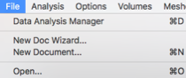
Use these buttons on the left side of the main BV
window to adjust rows and columns such that the matrix fills the screen. The bigger the slices, the better.
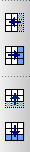
1. To play a movie of slices over time
Options/Time
Course Movie…
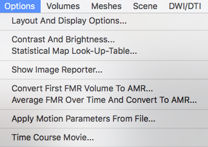
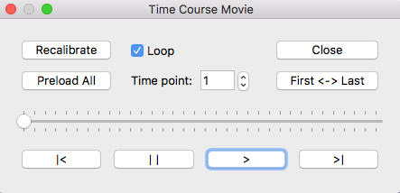
“Preload All” will
make your movie play more smoothly.
Use the bottom
buttons to play the movie >,
pause ||, step back |< or step forward >|
You can also
place your cursor in the numbered window right of “Time point:” and use the up
and down arrows on your keyboard to move back and forward.
You can click
First <-> Last to jump between first and last volumes.
Some slices are
more informative than others, especially the top slice of the brain, where
up-down movements (z translation) is most easy to detect.
Socrates (creator of the Socratic
method) asks… “Why?”
[Socrates
doesn’t expect you to answer his questions in your assignments; he just wants
you to keep thinking as you explore the data.]
Note any time
points at which things appeared “funky”.
If you think you
see motion artifacts, you should also examine the movie for the
motion-corrected fMR to see if motion correction
fixed it.
2. To see motion correction output one way:
Analysis/General
Linear Model: Single Study…
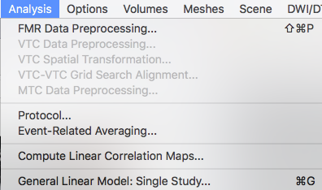
Load… Select the
file ending in _3DMC.sdm
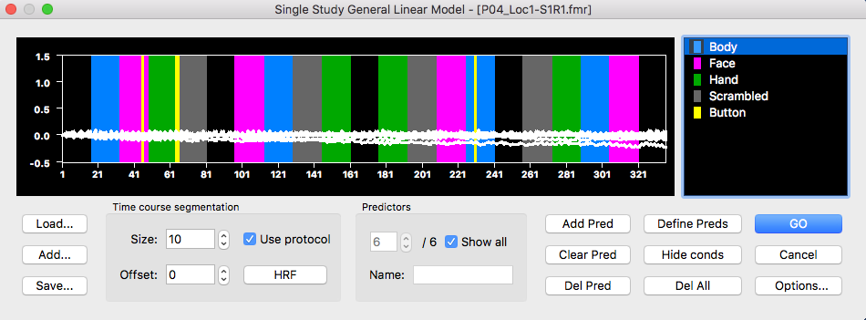
Click “Use
protocol” under Time course segmentation to see the colored bars showing the
timing of conditions.
If you want to
see the name of each predictor, under Predictors you can step through each of
the 6. To see them all at once, turn on “Show all”
Note any time
points where there were abrupt changes.
Note any gradual changes. Pay
attention to the magnitude of changes (y-axis).
3. To see motion correction output another way:
You can also
inspect the .bmp files Kevin saved but these show motion plots across the whole
session.
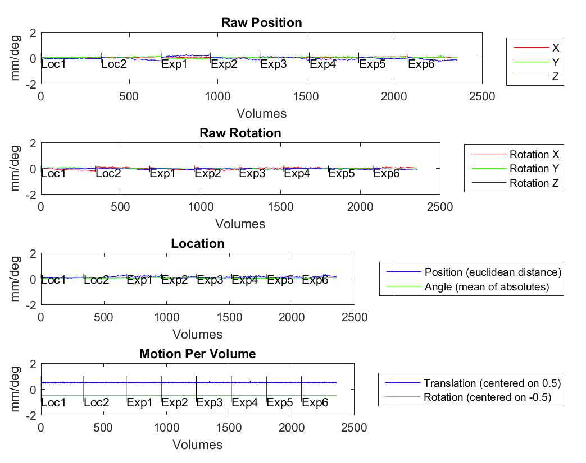
Raw Position
(top row) and Raw Rotation (2nd row) show the same plots of head
motion over time as in Step 2 above, but split into 3
translation and 3 rotation plots.
Each plot shows
motion correction output concatenated across the entire session. Breaks between
runs are indicated by short vertical lines on the y-axis = 0 line and the run
is labelled beneath.
Location shows
how much the 3D location (across directions) changed over time.
Motion Per
Volume shows the derivative of the Location plot. That is, it shows how much
the participant moved between volumes over time.
Note any time
points where there were abrupt changes.
Note any gradual changes. Pay
attention to the magnitude of changes (y-axis).
4. Voxel surfing
Sometimes you
can detect motion simply by looking across strategically or even randomly
selected time courses.
To do so with .fmr files, just use the mouse to select a box containing
the voxels for which you want to extract a time course.
This will draw a
green box on the slice and derive the time course from all voxels inside the
brain in that box.
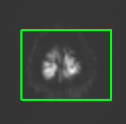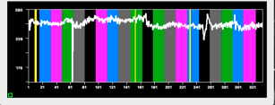
Inspect the time
course for suspicious trends.
Repeat across
different regions of the brain (hint: try top and bottom slices, ventricles,
outside head, regions of expected activation such as occipital pole)
Note the volumes
(time points) at which funky things happened, especially if observed across
multiple regions.
Socrates says, “Where would you
expect genuine activation? Where would
you expect artifacts? How would the shape of genuine activation be expected to
differ from artifacts?”
Steps 1 and 2: Investigating Statistical Maps to Find Evidence for
Artifacts and Evaluate the Effect of Motion PONIs
Step 1: Inspecting statistical maps can also provide
clues as to the effect of head motion.
Head motion may
be correlated with the paradigm (e.g., the participant relaxes every time a
baseline condition starts) or it may be uncorrelated (e.g., as with random swallowing). If it is correlated with your paradigm, you
may see activation at boundaries between tissues with different intensities
(e.g., brain edges vs. outside brain; brain vs. ventricles, brain vs.
susceptibility zones). If it is
relatively uncorrelated with your paradigm, you may not see these
artifacts. Nevertheless, motion
artifacts will hamper your ability to find significance in contrasts.
File/Open… the
version of the file without motion correction (PXX-Loc1-S1R1.fmr)
Analysis/Overlay
General Linear Model… the version of the GLM with both POIs and PONIs (PXX_Loc1-S1R1
raw POI+PONI.glm)
Play with
contrasts using POIs or PONIs such as the following:
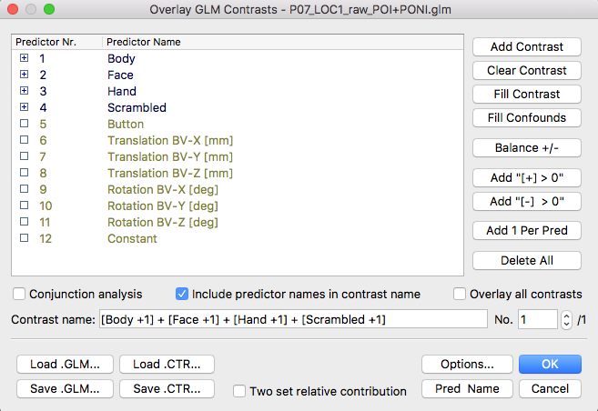 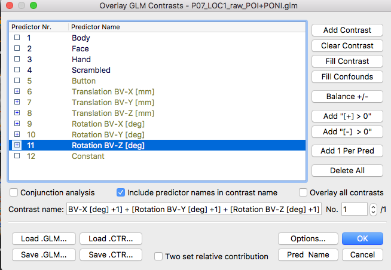
You can adjust
thresholds by clicking these symbols (bigger blobs and smaller blobs) on the left
side of the main BV window or by using the menu generated from Analysis/Overlay
Volume Maps… (the latter shows you the Min threshold, which is helpful – for
casual data inspection, Min = 2.5 or 3 is a reasonable value).
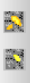
Socrates says, “Where do you see
signals predicted by POIs? Where do you see signals predicted by PONIs?”
Step 2: To contrast the effect of including PONIs in
the data from the participant with the worst motion artifacts.
Decide which subject you think had the worst motion
and use only their data for the remainder of the tutorial.
File/Open… PXX_Loc1-S1R1_3DMCTS.fmr
Do this again so you have two versions that you can
jump between.
In one version, Analysis/Overlay General Linear Model…
PXX_Loc1-S1R1
3DMCTS POI.glm
Pick a contrast
of POIs you think is sensible to use to find visual cortex or the hand or face
area.
In the other version, Analysis/Overlay General Linear
Model…
PXX_Loc1-S1R1
3DMCTS POI.glm
Pick the same
contrast of POIs that you used in the first version.
Use Analysis/Overlay Volume
Maps… to be sure that both versions are using the same threshold.
Compare and contrast the effect of including PONIs
even though our contrast only involves POIs.